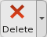

|
|
Main Window Toolbars |
The main window has a number of toolbars, which can be displayed or hidden, and placed on any edge of the Workspace. The toolbars provide access to many of the commands that are on the menus.
To show or hide a toolbar, click the appropriate button on the Manager toolbar, or choose Window → Toolbars → toolbar from the main menu bar. The manager toolbar contains buttons for showing or hiding the other toolbars.
To hide a toolbar, you can right-click in the toolbar and choose Hide from the shortcut menu.
To move a toolbar, drag the handle at the top (or left) to the desired location. It can be dragged to either side or the top or bottom of the Workspace.
The appearance of the toolbar buttons can be customized. You can display the icon only, text only, text under the icon or text beside the icon. For an individual toolbar, right-click and choose an option from the Style submenu of the shortcut menu. You can change the style for all toolbars in the General - Appearance tab of the Preferences panel. You can also change the font for the toolbar buttons in the General - Application fonts tab.
The buttons that are displayed on each toolbar can be selected in the Customize Toolbars panel, which you open by choosing Customize from the toolbar shortcut menu, or by choosing Maestro → Customize → Toolbars.
There are several kinds of buttons on the toolbar. Some buttons perform
simple tasks like the Fit to Workspace or Clear Workspace button. Other buttons open panels such as the
Import panel. Buttons with a small arrowhead to the
right are actually "split" buttons: the left part has the icon and
perform the default action when you click on it, the right part, with the
arrowhead, opens a menu. These are called "menu buttons".

Some of these buttons "remember" the last menu choice,
and you only need to click the button to use that choice again. Some buttons
have different actions depending on whether you click them or double-click
them. Buttons that you can use for picking apply the action to the selected
atoms if you double-click them, for example.
Menu buttons that apply an action to an atom selection can have a list of atom categories that you can choose for the atom selection. The complete list of categories follows. Menu buttons include the categories that are relevant, which might not be the entire list.
The buttons available for each toolbar are described in separate topics, which are linked below. Where there is a topic describing a button's action, the link is given. Equivalent menu choices and keyboard shortcuts are given where appropriate.
|